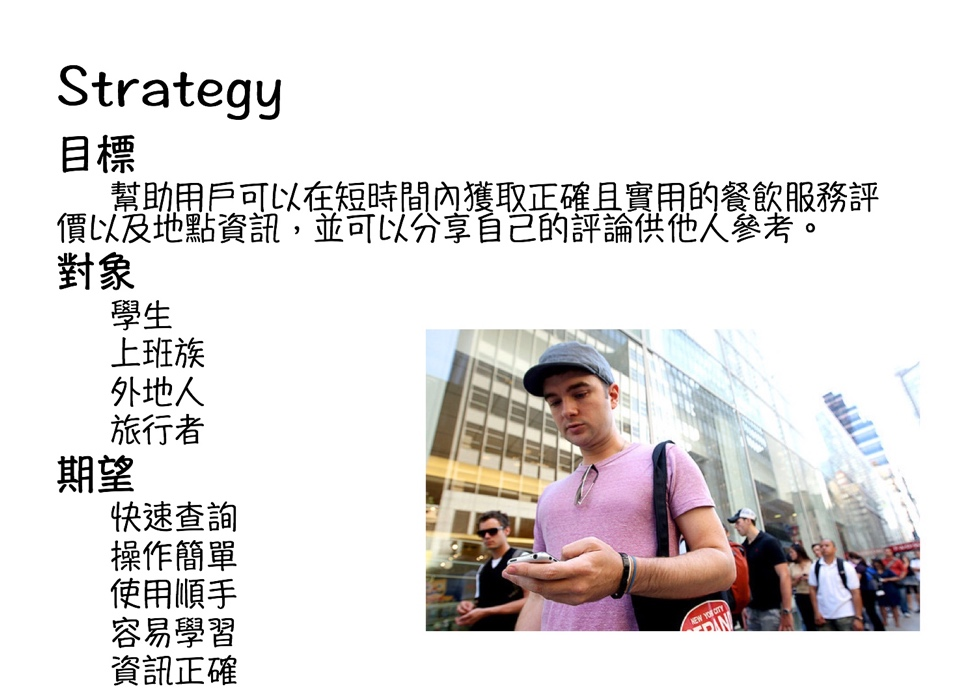
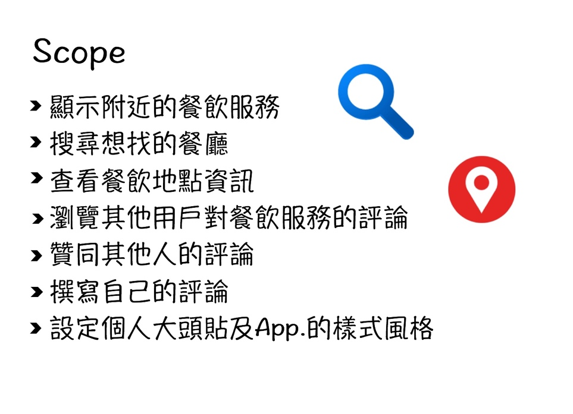
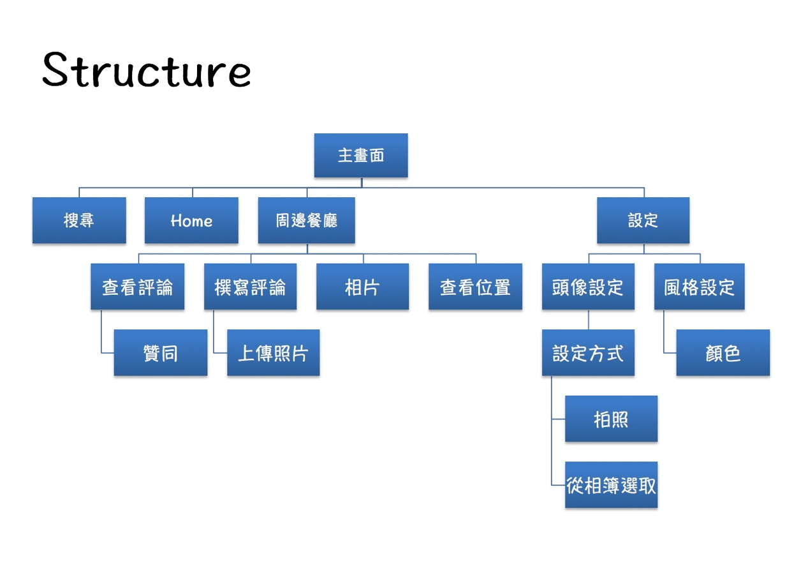
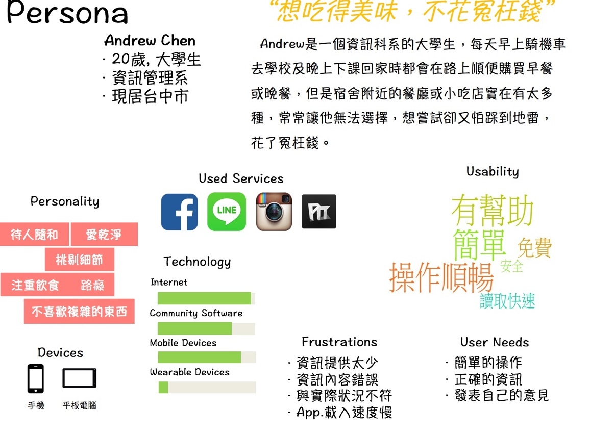
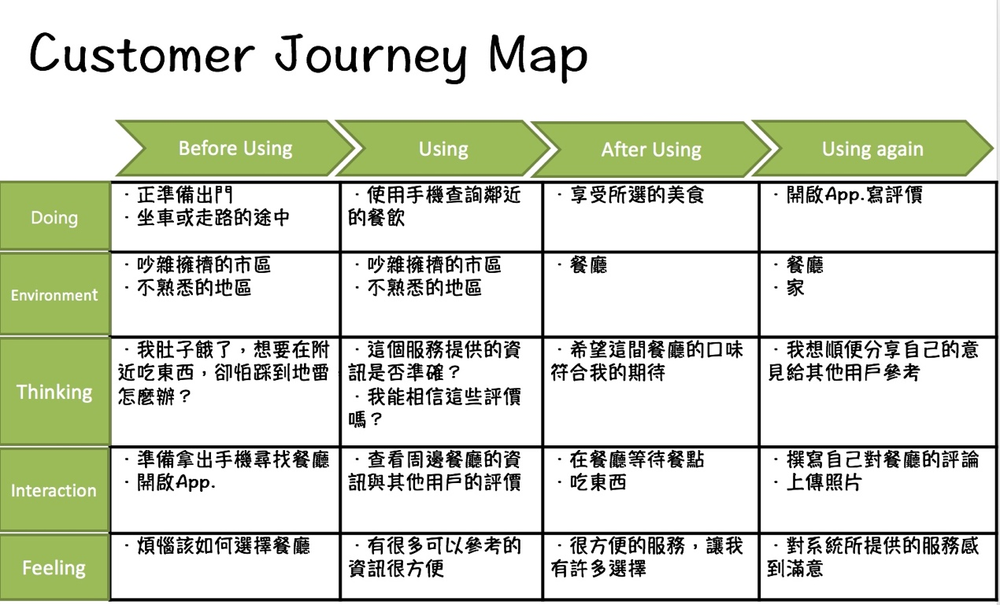
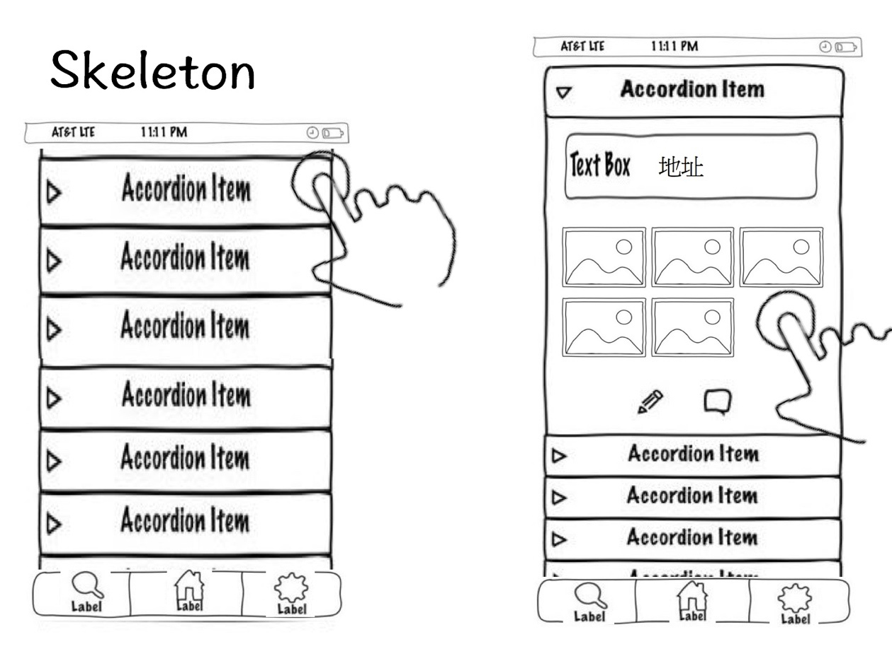
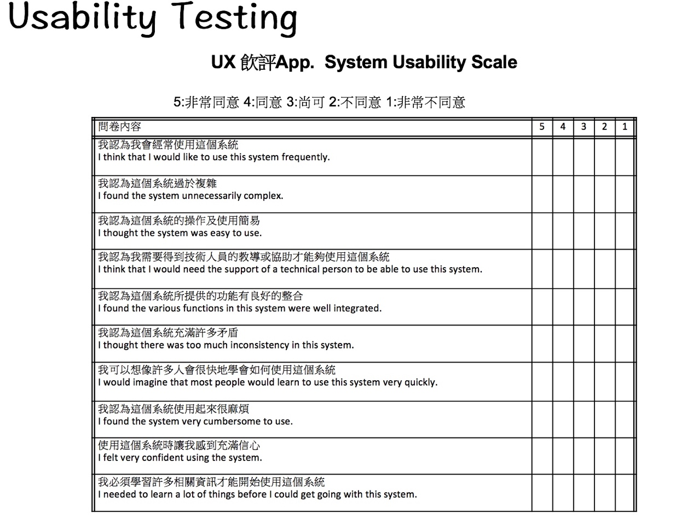

- 使用者經驗設計
- 這是根據學校的使用者經驗課程，做出一個經過UX設計的概念作品。主題為「移動式的餐飲服務」，因此我選擇設計一個用來做餐廳評價的App並取名為「飲評」。過程中運用了UX設計時的5S概念，首先針對產品本身的策略Strategy：
- 接著是對產品功能做敘述的Scope部分：
- 前兩個S定義完成後，便開始進行第三個S，Structure的設計：
- 在進行最後的兩個S，Skeleton與Surface之前，必須先進行Persona與Customer Journey Map用戶旅行地圖的設計。
我在Persona定義了一個可能的使用者，並把他的生活型態、習慣整理出來。 - 接著針對用戶在操作產品時的流程，定義一個Customer Journey Map，用戶旅行地圖。主要是用來假設用戶在使用產品時當下的環境、心理狀態。
- 最後便針對整個產品的樣式進行設計，也就是第四個S，Skeleton：
- 有了Skeleton，即可根據內容進行最後一個S，Surface的設計：
- 在整體設計流程走過一遍之後，透過Axure軟體做出一個能夠呈現各個畫面的雛形，最後必須根據產品本身進行Usability Testing，因此我在這邊使用了一個很典型的問卷，並訪問周遭的幾位朋友：







